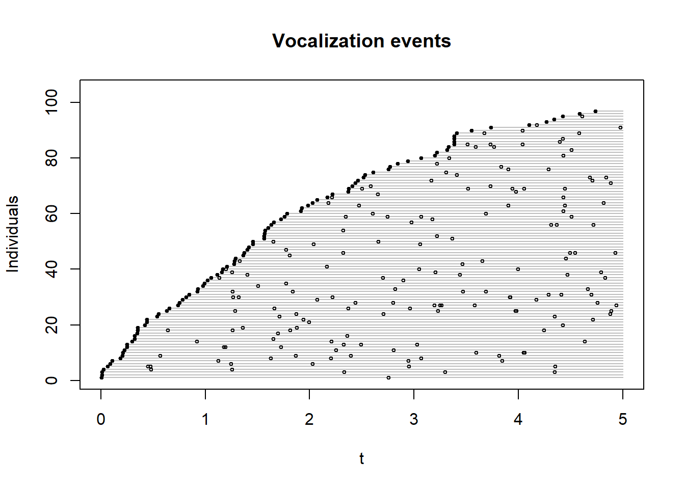
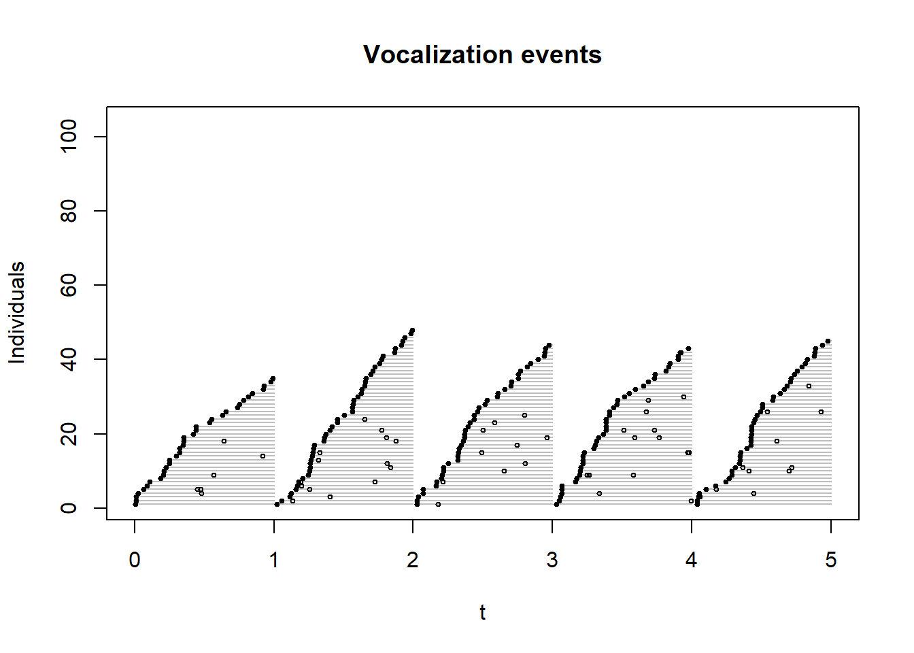

Chapter 9 Miscellaneous Topics
model selection and conditional likelihood
variance/bias trade off
error propagation
MCMC?
N-mixture ideas
phylogenetic and life history/trait stuff
PIF methods
These are just reminders, to be deleted later
You can label chapter and section titles using {#label} after them, e.g., we can reference Chapter 1. If you do not manually label them, there will be automatic labels anyway.
Figures and tables with captions will be placed in figure and table environments, respectively.
par(mar = c(4, 4, .1, .1))
plot(pressure, type = 'b', pch = 19)
Figure 9.1: Here is a nice figure!
Reference a figure by its code chunk label with the fig: prefix, e.g., see Figure 9.1. Similarly, you can reference tables generated from knitr::kable(), e.g., see Table 9.1.
knitr::kable(
head(iris, 20), caption = 'Here is a nice table!',
booktabs = TRUE
)| Sepal.Length | Sepal.Width | Petal.Length | Petal.Width | Species |
|---|---|---|---|---|
| 5.1 | 3.5 | 1.4 | 0.2 | setosa |
| 4.9 | 3.0 | 1.4 | 0.2 | setosa |
| 4.7 | 3.2 | 1.3 | 0.2 | setosa |
| 4.6 | 3.1 | 1.5 | 0.2 | setosa |
| 5.0 | 3.6 | 1.4 | 0.2 | setosa |
| 5.4 | 3.9 | 1.7 | 0.4 | setosa |
| 4.6 | 3.4 | 1.4 | 0.3 | setosa |
| 5.0 | 3.4 | 1.5 | 0.2 | setosa |
| 4.4 | 2.9 | 1.4 | 0.2 | setosa |
| 4.9 | 3.1 | 1.5 | 0.1 | setosa |
| 5.4 | 3.7 | 1.5 | 0.2 | setosa |
| 4.8 | 3.4 | 1.6 | 0.2 | setosa |
| 4.8 | 3.0 | 1.4 | 0.1 | setosa |
| 4.3 | 3.0 | 1.1 | 0.1 | setosa |
| 5.8 | 4.0 | 1.2 | 0.2 | setosa |
| 5.7 | 4.4 | 1.5 | 0.4 | setosa |
| 5.4 | 3.9 | 1.3 | 0.4 | setosa |
| 5.1 | 3.5 | 1.4 | 0.3 | setosa |
| 5.7 | 3.8 | 1.7 | 0.3 | setosa |
| 5.1 | 3.8 | 1.5 | 0.3 | setosa |
9.1 Binomial model and censoring
Try cloglog with a rare species, like BOCH
#spp <- "OVEN" # which species
spp <- "BOCH" # which species
#spp <- "CAWA" # which species
x <- data.frame(
josm$surveys,
y=as.numeric(ytot[rownames(x), spp]))
x$y01 <- ifelse(x$y > 0, 1, 0)
table(x$y)
mP <- glm(y ~ Decid * ConifWet, x, family=poisson)
mBc <- glm(y01 ~ Decid * ConifWet, x, family=binomial("cloglog"))
mBl <- glm(y01 ~ Decid * ConifWet, x, family=binomial("logit"))
coef(mP)
coef(mBc)
coef(mBl)
plot(fitted(mBc) ~ fitted(mP), col=4,
ylim=c(0, max(fitted(mP))), xlim=c(0, max(fitted(mP))))
points(exp(model.matrix(mBc) %*% coef(mBc)) ~ fitted(mP), col=2)
abline(0,1)9.2 Optimal partitioning
oc <- opticut(as.matrix(ytot) ~ 1, strata = x$HAB, dist="poisson")
plot(oc)9.3 Optilevels
When we have categorical or compositional (when e.g. proportions add up to 1, also called
the unit sum constraint) data,
we often want to simplify and merge classes or add up columns.
We can do this based on the structural understanding of these land cover classes
(call all treed classes Forest, like what we did for FOR, WET and AHF).
Alternatively, we can let the data (the birds) tell us how to merge the classes. The algorithm does the following:
- fit model with all classes,
- order estimates for each class from smallest to largest,
- merge classes that are near each others, 2 at a time, moving from smallest to largest,
- compare \(\Delta\)AIC or \(\Delta\)BIC values for the merged models and pick the smallest,
- treat this best merged model as an input in step 1 and star over until \(\Delta\) is negative (no improvement).
Here is the code for simplifying categories using the opticut::optilevels function:
M <- model.matrix(~HAB-1, x)
colnames(M) <- levels(x$HAB)
ol1 <- optilevels(x$y, M, dist="poisson")
sort(exp(coef(bestmodel(ol1))))
## estimates
exp(ol1$coef)
## optimal classification
ol1$rank
data.frame(combined_levels=ol1$levels[[length(ol1$levels)]])Here is the code for simplifying compositional data:
ol2 <- optilevels(x$y, x[,cn], dist="poisson")
sort(exp(coef(bestmodel(ol2))))
## estimates
exp(ol2$coef)
## optimal classification
ol2$rank
head(groupSums(as.matrix(x[,cn]), 2, ol2$levels[[length(ol2$levels)]]))9.4 N-mixture models
9.5 Estimating abundance
Exponential model, bSims data
set.seed(1)
phi <- 0.5
Den <- 1
l <- bsims_init()
a <- bsims_populate(l, density=Den)
b <- bsims_animate(a, vocal_rate=phi, move_rate=0)
tint <- 1:5
(tr <- bsims_transcribe(b, tint=tint))## bSims transcript
## 1 km x 1 km
## stratification: H
## total abundance: 104
## total duration: 10
## detected: 104 heard
## 1st inds. [0-1, 1-2, 2-3, 3-4, 4-5 min] [0+ m]Multiple-visit stuff for bSims: the counting of new individuals resets for each interval (also: needs equal intervals)
tr$visits## 0-1min 1-2min 2-3min 3-4min 4-5min
## 0+m 35 48 44 43 45v <- get_events(b, vocal_only=TRUE)
v <- v[v$t <= max(tint),]
v1 <- v[!duplicated(v$i),]
tmp <- v1
tmp$o <- seq_len(nrow(v1))
plot(o ~ t, tmp, type="n", ylab="Individuals",
main="Vocalization events",
ylim=c(1, nrow(b$nests)), xlim=c(0,max(tint)))
for (i in tmp$o) {
tmp2 <- v[v$i == v1$i[i],]
lines(c(tmp2$t[1], max(tint)), c(i,i), col="grey")
points(tmp2$t, rep(i, nrow(tmp2)), cex=0.5)
points(tmp2$t[1], i, pch=19, cex=0.5)
}
plot(o ~ t, tmp, type="n", ylab="Individuals",
main="Vocalization events",
ylim=c(1, nrow(b$nests)), xlim=c(0,max(tint)))
for (j in seq_along(tint)) {
ii <- if (j == 1)
c(0, tint[j]) else c(tint[j-1], tint[j])
vv <- v[v$t > ii[1] & v$t <= ii[2],]
tmp <- vv[!duplicated(vv$i),]
tmp$o <- seq_len(nrow(tmp))
if (nrow(tmp)) {
for (i in tmp$o) {
tmp2 <- vv[vv$i == tmp$i[i],]
lines(c(tmp2$t[1], ii[2]), c(i,i), col="grey")
points(tmp2$t, rep(i, nrow(tmp2)), cex=0.5)
points(tmp2$t[1], i, pch=19, cex=0.5)
}
}
}
library(unmarked)## Loading required package: lattice## Loading required package: Rcpp## Loading required package: reshape2##
## Attaching package: 'unmarked'## The following object is masked from 'package:lme4':
##
## ranef## The following objects are masked from 'package:nlme':
##
## getData, ranef## The following objects are masked from 'package:raster':
##
## getData, projection## The following object is masked from 'package:sp':
##
## coordinates## The following object is masked from 'package:stats4':
##
## mlef <- function() {
a <- bsims_populate(l, density=Den)
b <- bsims_animate(a, vocal_rate=phi, move_rate=0)
tr <- bsims_transcribe(b, tint=tint)
drop(tr$visits)
}
Den <- 0.01
#ymx <- tr$visits
(ymx <- t(replicate(10, f())))## 0-1min 1-2min 2-3min 3-4min 4-5min
## [1,] 0 0 0 0 0
## [2,] 0 1 0 0 1
## [3,] 0 2 2 1 0
## [4,] 1 1 0 1 0
## [5,] 0 0 0 0 0
## [6,] 0 0 0 0 0
## [7,] 2 2 0 1 0
## [8,] 1 1 0 0 0
## [9,] 0 0 0 0 0
## [10,] 0 1 0 1 0## highly dependent on K when Den is higher
nmix <- pcount(~1 ~1, unmarkedFramePCount(y=ymx), K=1000)
coef(nmix)## lam(Int) p(Int)
## -0.02602 -0.44730plogis(coef(nmix)[2])## p(Int)
## 0.39exp(coef(nmix)[1])## lam(Int)
## 0.9743Den * 100## [1] 1Barker, Nicole K. S., Patricia C. Fontaine, Steve G. Cumming, Diana Stralberg, Alana Westwood, Erin M. Bayne, Péter Sólymos, Fiona K. A. Schmiegelow, Samantha J. Song, and D. J. Rugg. 2015. “Ecological Monitoring Through Harmonizing Existing Data: Lessons from the Boreal Avian Modelling Project.” Wildlife Society Bulletin 39: 480–87. https://doi.org/10.1650/CONDOR-14-108.1.
Mahon, C. Lisa, Gillian Holloway, Péter Sólymos, Steve G. Cumming, Erin M. Bayne, Fiona K. A. Schmiegelow, and Samantha J. Song. 2016. “Community Structure and Niche Characteristics of Upland and Lowland Western Boreal Birds at Multiple Spatial Scales.” Forest Ecology and Management 361: 99–116. https://doi.org/10.1016/j.foreco.2015.11.007.
Matsuoka, S. M., C. L. Mahon, C. M. Handel, Péter Sólymos, E. M. Bayne, P. C. Fontaine, and C. J. Ralph. 2014. “Reviving Common Standards in Point-Count Surveys for Broad Inference Across Studies.” Condor 116: 599–608. https://doi.org/10.1650/CONDOR-14-108.1.